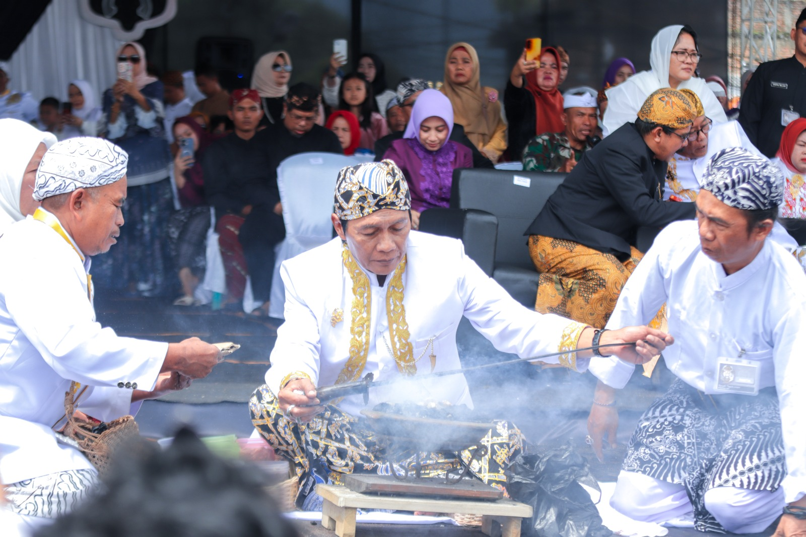

Tradisi Nyangku
Ritual tahunan di Panjalu, Ciamis, untuk membersihkan benda-benda pusaka peninggalan Prabu Sanghyang Borosngora. Prosesi ini melibatkan arak-arakan pusaka ke alun-alun, pencuciannya menggunakan air dari sembilan mata air, dan menjadi simbol untuk membersihkan diri serta merawat ingatan kolektif akan sejarah. Selain itu, tradisi ini juga dimaknai sebagai bentuk penghormatan terhadap leluhur dan sarana untuk mempererat silaturahmi masyarakat.

Tradisi Seren Taun
tradisi upacara adat masyarakat agraris Sunda di Jawa Barat sebagai wujud syukur atas hasil panen setahun yang lalu dan permohonan berkah untuk tahun mendatang. Tradisi ini umumnya dilaksanakan setiap tahun, melibatkan prosesi arak-arakan hasil panen (terutama padi) menuju lumbung, disertai ritual, pertunjukan kesenian, dan silaturahmi.

Festival Asia Afrika
Perayaan tahunan yang menyoroti persaudaraan dan solidaritas antarnegara Asia dan Afrika, serta memperkuat warisan sejarah Konferensi Asia Afrika (KAA) 1955. Festival ini menampilkan karnaval budaya, parade busana tradisional, pertunjukan seni, dan partisipasi delegasi dari berbagai negara dan daerah di Indonesia untuk menunjukkan kekayaan budaya dan semangat perdamaian.